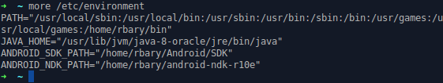

ARDroneSDK3 est à ce jour la dernière version du Parrot SDK, publiée en novembre 2014. Pour faire simple, ce SDK permet de contrôler la plupart des drones et/ou minidrones de Parrot (Rolling Spider, Bebop Drone, Skycontroller, Jumping Sumo). Il faut entendre par "contrôler" le fait d'effectuer les actions suivantes :
- Se connecter à un drone
- Piloter un drone
- Recevoir du stream depuis un drone
- Sauvegarder et télécharger des photos ou des vidéos réalisées par un drone
- Transmettre et faire jouer des séquences automatiques de vol (autopilot flight plan)
- Mettre à jour le drone
- Faire du mapping 3D

Exemple d'utilisation du Parrot SDK: l'application FreeFlight3 qu'il est recommandé d'installer sous Android ou iOS lors de l'achat d'un drone ou minidrone, utilise l'ARDroneSDK3.

Est-il possible de créer sa propre application de contrôle de drones avec ce SDK ?"
Oui, tout à fait, c'est tout l'intérêt de la mise à disposition des sources du SDK. Si vous avez des compétences en développement d'applications mobiles (Android ou iOS), il vous suffira de créer un projet de développement mobile (Android Studio, Plugin Eclipse ADT, XCode), ensuite de mettre en place les dépendances nécessaires pour avoir la main sur les bibliothèques du SDK et enfin les utiliser à votre escient dans le code de votre application mobile. Il est aussi possible d'implémenter une application de type client lourd en C permettant de contrôler le drone depuis un laptop (ici sous xubuntu 14.04)
En effet, les sources du SDK sont hébergés dans un répertoire Github sous licence BSD. Ce répertoire contient principalement :
- Les sources des différentes bibliothèques qui constituent le SDK
- Des utilitaires de Build
- Un manifest
- Quelques exemples d'utilisation du SDK pour chaque plateforme (Unix, Android, iOS)
On peut retrouver l'organisation complète du SDK par ici
Comment utiliser le SDK ?
Le SDK est principalement écrit en C, et fourni donc des bibliothèques pour les Systèmes Unix, Android et iOS respectivement utilisables en C, Java et Objective C.
NB: Les manipulations pour ce billet concernent les plateformes Unix et Android.
Outils pré-requis
Il faut commencer par installer au préalable les outils suivants:
Installer curl
Dans un terminal, Faire $ sudo apt-get install curl
Installer Repo tool
$ mkdir ~/bin
$ PATH=~/bin:$PATH
$ curl https://storage.googleapis.com/git-repo-downloads/repo > ~/bin/repo
$ chmod a+x ~/bin/repo
Installer git
Faire $ sudo apt-get insall git-core
Ensuite effectuer la config minimale
$ git config --global user.name "Your Name"
$ git config --global user.email "jhon@doe.com"
Installer automake
Automake étant inclu dans autoconf, on installe simplement autoconf
$ sudo apt-get install autoconf
Installer libtool
$ sudo apt-get install libtool
Installer yasm
$ sudo apt-get install yasm
Installer nasm
$ sudo apt-get install nasm
Étape 1: Récupération des sources avec Repo
1.Créer un dossier vide dans lequel on va mettre en place notre SDK
$ mkdir ~/ARDroneSDK
$ cd ~/ARDroneSDK
2.Lancer la commande repo init pour initialiser un repo avec le manifest du SDK
$ repo init -u https://github.com/Parrot-Developers/arsdk_manifests.git
3.Descendre l'arbre complet des sources distants du SDK
$ repo sync
Étape 2: Le Build et la mise en place des dépendances
Pour une plateforme Unix
Les manipulation pour un build sous Unix sont les suivantes :
$ cd ~/ARDroneSDK
$ ./build.sh -p Unix-forall -t build-sdk-j
Le résultat du build sera dans le répertoire ~/ARDroneSDK/out/Unix-base/usr
On peut à présent faire fonctionner les exemples fournis avec le SDK qu'on peut trouver dans le répertoire ~/ARDroneSDK/packages/Samples/Unix.
A ce jour, les instructions décrites sur le site des développeurs Parrot pour faire fonctionner les exemples du SDK, sont sans issue, du moins pour Unix. Les "Makefiles" des exemples sous Unix n'étant pas à jour par rapport à l'architecture du SDK, il faudra y effectuer quelques modifications, et faire ensuite quelques builds atomiques pour les bibliothèques manquantes. Focalisons nous à présent sur les manipulations à faire pour l'exemple "Jumping Sumo Piloting".
Avec votre éditeur de texte favoris, ouvrez le Makefile situé à cet emplacement
~/ARDroneSDK/packages/Samples/Unix/JumpingSumoPiloting, puis faites les modifications suivantes:
SDK_DIR=~/ARDroneSDK
CFLAGS=-I$(IDIR) -I $(SDK_DIR)/out/Unix-base/staging/usr/include
LIBS=-L$(SDK_DIR)/out/Unix-base/staging/usr/lib -larsal -larcommands -larnetwork
-larnetworkal -lardiscovery $(EXTERNAL_LIB)
LIBS_DBG=-L$(SDK_DIR)/out/Unix-base/staging/usr/lib -larsal_dbg -larcommands_dbg
-larnetwork_dbg -larnetworkal_dbg -lardiscovery_dbg $(EXTERNAL_LIB)
Vous remarquerez dans les lignes précédentes du Makefile que,
JumpingSumoPiloting aura besoin des bibliothèques libarsal,libarcommands,
libarnetwork,libarnetworkal et libardiscovery pour fonctionner.
Problème : La bibliothèque libardiscovery est manquante dans le répertoire
~/ARDroneSDK/out/Unix-base/staging/usr/lib qui contient l'ensemble des bibliothèques qui ont été construites pour la plateforme Unix lors du Build complet du SDK.

Solution : Faire un build élémentaire pour cette bibliothèque.
Placez vous dans le répertoire ~/ARDroneSDK/package/libARDiscovery qui contient les sources de notre bibliothèque manquante puis vous faites :
$ cd Build
$ ./bootstrap
$ ./configure --prefix=/home/rbary/ARDroneSDK/out/Unix-base/staging/usr
--with-libARSALInclude=~/ARDroneSDK/out/Unix-base/staging/usr/include
$ make
$ make install
Il faut renseigner pour l'argument --prefix l'emplacement où l'on souhaite installer la bibliothèque. Attention il faut donner un chemin absolu comme nous l'avons fait. On peut voir que notre bibliothèque dépend des includes (headers) de libARSAL situés à cet emplacement
~/ARDroneSDK/out/Unix-base/staging/usr/include
Le résultat attendu est le suivant :

libardiscovery est bien installé dans le répertoire
~/ARDroneSDK/out/Unix-base/staging/usr/lib et les headers correspondants (qui pourront être utilisés par d'autres bibliothèques) le sont aussi dans le répertoire ~/ARDroneSDK/out/Unix-base/staging/usr/include
Remarque : Le répertoire ~/ARDroneSDK/package/ en plus de contenir des exemples de fonctionnement du SDK, comprend également les sources de toutes les bibliothèques du SDK. S'il vous manque, une bibliothèque pour un exemple donné il vous suffira de refaire la manipulation précédente pour la bibliothèque concernée.
Pour une plateforme Android
Pour un build Android (IDE Android sur Unix) il faut :
- un JDK avec Java 6(1.6) minimum
- Android SDK et Android NDK
- Déclarer les variables d'environnement
ANDROID_SDK_PATHetANDROID_NDK_PATHpour pointer sur les répertoires correspondants aux outils respectifs.
Nous utiliserons Android Studio) pour notre exemple. C'est un bundle avec lequel on peut avoir de base Android SDK.
Installer Android Studio
Télécharger Android Studio à la racine de votre répertoire personnel. Dézippez android-studio-ide-141.2456560-linux.zip puis dans un terminal, faites :
$ cd ~/android-studio/bin/
$ ./studio.sh
Android studio vous indiquera qu'il vous manque Android SDK. Faites next pour l'installer.

Vous pouvez choisir l'emplacement qui vous convient; Notons qu'il est préférable de l'installer à l'extérieur de android-studio
Puis vous faites finish.
Installer Android NDK
Android NDK est un ensemble d'outils permettant d'implémenter une partie d'une application avec du code natif C ou C++. Nous installerons Android NDK à la racine de notre répertoire personnel. Commencez par télécharger le paquet correspondant depuis ce lien et suivez les instructions d'installation
Déclarer les variables d'environnement
Android studio sera prêt à être utilisé, mais vous pouvez fermer la fenêtre.
On a donc Android SDK et Android NDK installés respectivement aux emplacements
/home/rbary/Android/SDK et
/home/rbary/ .
On renseigne les variables d'environnement nécessaires (ANDROID_SDK_PATH et
ANDROID_NDK_PATH) avec ces chemins dans le fichier /etc/environnement en root comme ceci:

Ensuite $ source /etc/environnement.
Puis on vérifie, qu'elles ont été déclarées:

On peut dès lors builder notre Parrot SDK pour Android. On refait les mêmes manipulations de l'étape 1 en donnant un autre nom au répertoire qui va recevoir le SDK. ARDroneSDK-Android par exemple.
$ mkdir ~/ARDroneSDK-Android
$ cd ~/ARDroneSDK-Android
$ repo init -u https://github.com/Parrot-Developers/arsdk_manifests.git
$ repo sync
Puis on fait le Build:
$ ./build.sh -p Android-forall -t build-sdk -j
Étape 3: Utilisation du SDK
Exemple d'utilisation sous Unix : JumpingSumoPiloting
Maintenant que notre SDK est installé correctement, on peut à présent l'utiliser. Nous nous contenterons pour le moment de faire fonctionner l'un des exemples d'utilisation livré avec le SDK en l’occurrence
JumpingSumoPiloting.
On peut remarquer que dans le Makefile, que notre exemple dépend d'une bibliothèque externe : libncurses

On installe libncurses si nécessaire:
$ sudo apt-get update
$ sudo apt-get install ncurses-dev
On compile les sources de JumpingSumoPiloting et on lance notre exécutable :
$ cd ~/ARDroneSDK/package/Samples/Unix/JumpingSumoPiloting
$ make
$ ./JumpingSumoPiloting
Si après le make vous avez une erreur comme sur l'image qui suit :

Il faudra créer un lien symbolique dans /usr/lib qui pointera vers chacune des bibliothèques nécessaires pour JumpingSumoPiloting comme ceci:
sudo ln -s ~/ARDroneSDK/out/Unix-base/staging/usr/lib/[nom_de_lib].so
/usr/lib/[nom_de_lib].so
On a pour libarsal la commande suivante:
sudo ln -s ~/ARDroneSDK/out/Unix-base/staging/usr/lib/libarsal.so
/usr/lib/libarsal.so
Exceptionellement, pour libardiscovery la commande sera:
sudo ln -s ~/ARDroneSDK/out/Unix-base/staging/usr/lib/libardiscovery-3.1.0.so
/usr/lib/libardiscovery-3.1.0.so
Que fait JumpingSumoPiloting ?
JumpingSumoPiloting est un exemple basique d'utilisation du SDK qui permet de réaliser les actions suivantes:
- rechercher un mini drone aux alentours (notre Jumping Sumo)
- se connecter au minidrone (ici en wifi)
- envoyer et recevoir des commandes pour piloter le minidrone (Le pilotage du drone se fait avec les touches du clavier : touches directionnelles et Espace)
- afficher l'état de la batterie du minidrone dans une IHM
Le tableau qui suit fait un récapitulatif des services fournis par les différentes bibliothèques du SDK qui sont utilisées par JumpingSumoPiloting
| bibliothèques | Services |
|---|---|
| libARSAL | Une couche d'abstraction du système |
| libARCommands | Les commandes qu'on peut envoyer et recevoir au/du drone |
| libARNetwork | L'envoi et la réception des paquets au/depuis le drone |
| libARNetworkal | Un couche d'abstraction pour les différents types de réseau sans-fil (Bluetooth Low Energy ou Wifi) |
| libARDiscovery | La découverte dans le réseau des drones supportés |
Pour en savoir plus sur les autres bibliothèques
Pour connaître les caractéristiques techniques du Jumping Sumo
Exemple d'utilisation sous Android : RollingSpiderPiloting
~/ARDroneSDK/packages/Samples/Android/RollingSpiderPiloting